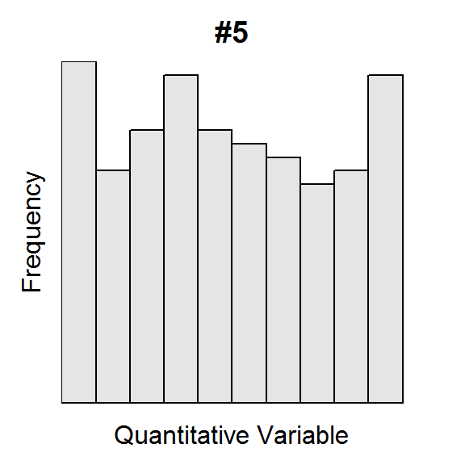

<hr />
<div id="shape-and-outliers-i" class="section level2">
<h2>Shape and Outliers I</h2>
<p>For each histogram below, describe the shape and presence of outliers.</p>
<p></p>
<hr />
<div class="text-center">
<ul class="pagination pagination-lg">
<li>
<a href="UEDAQuant2.html">^</a>
</li>
<li class="active">
<a href="#">1</a>
</li>
<li>
<a href="UEDAQuant2_CE2.html">2</a>
</li>
<li>
<a href="UEDAQuant2_CE3.html">3</a>
</li>
<li>
<a href="UEDAQuant2_CE4.html">4</a>
</li>
<li>
<a href="UEDAQuant2_CE5.html">5</a>
</li>
<li>
<a href="UEDAQuant2_CE6.html">6</a>
</li>
</ul>
</div>


</div>

<script>

// add bootstrap table styles to pandoc tables
function bootstrapStylePandocTables() {
  $('tr.header').parent('thead').parent('table').addClass('table table-condensed');
}
$(document).ready(function () {
  bootstrapStylePandocTables();
});


</script>

<!-- dynamically load mathjax for compatibility with self-contained -->
<script>
  (function () {
    var script = document.createElement("script");
    script.type = "text/javascript";
    script.src  = "https://mathjax.rstudio.com/latest/MathJax.js?config=TeX-AMS-MML_HTMLorMML";
    document.getElementsByTagName("head")[0].appendChild(script);
  })();
</script>

</body>
</html>
